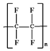
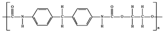

Chloroform hydration
Hydrophobic hydration is the hydration of hydrophobic molecules and surfaces.
 The hydrophobic effect
The hydrophobic effect
 Hydrophobic versus hydrophilic interfaces
Hydrophobic versus hydrophilic interfaces
 Extensive hydrophobic interfaces
Extensive hydrophobic interfaces
 Solubility effects
Solubility effects
 Solubility effects
Solubility effects
 Hydrotropes
Hydrotropes
 Salting-out and salting-in
Salting-out and salting-in
 Young's equation
Young's equation
 Alcoholic solutions
Alcoholic solutions
The term 'hydrophobic' is derived from hydro- (water) and phobos (fear). However, it is not so much that hydrophobic molecules 'fear' (that is, 'does not enjoy the company of') water as water 'fears' the hydrophobic molecules. Hydrophobic molecules in water generally tend to aggregate, minimizing their surface contact and associated surface energy with water; hence 'oils and water do not mix'. Smaller hydrophobic materials do, however, dissolve to a small extent in water as water molecules can arrange around them without breaking hydrogen bonds or losing much energy and the hydrophobic molecule can interact with these water molecules with multiple van der Waals interactions, due to the small size of water molecules and flexibility in their spatial arrangement. The following thermodynamic effects are found on hydrophobic hydration [1376]:
The "hydrophobic effect" of hydrophobic solutes in water (such as nonpolar gases) is primarily a consequence of changes in the clustering in the surrounding water and the consequential difference in energy between these water molecules and the bulk water, rather than water-solute interactions [1674]. It has been quantified using a 1-propanol cosolvent probing methodology [2211]. Hydrophobic hydration (for reviews, see [241, 2363]) produces a reduction in density and an increase in heat capacity [821]. The expanded network causes the density decrease, whereas the ordered bonds must be bent on increasing the temperature, so affecting the heat capacity. Thus, hydrophobic hydration behaves oppositely to polar hydration, as polar hydration increases the density and decreases heat capacity due to their associated disorganized hydrogen bonds being already bent or broken. Hydrophobic hydration is accompanied by
(a) a negative enthalpy change, due in part to the multiple van der Waals interactions between water and the hydrophobic material,
(b) a negative entropy change due to the increased order in the surrounding water and the loss of translational entropy caused by the insertion of the cavity into the hydrogen-bonding network,
(c) a positive heat capacity change (CP) due to the negative enthalpy change (i.e., the stronger hydrogen bonds at the surface), and
(d) an overall reduction in volume due to the more efficient solute packing density, only partially compensated by the localized solvent density decrease [903].
For example, adding CH2 groups to aliphatic alcohols increases the heat produced on solution (ΔH/CH2 = -5.4 kJ ˣ mol−1) but causes a more significant decrease in the entropy (-TΔS/CH2 = +7.1 kJ ˣ mol−1) [1217]. The increased van der Waals attractions over the liquid-gas interface cause γLS < γLG. These thermodynamic factors compensate to some extent, but the entropy term is most significant, so the free energy is generally positive, accounting for the low solubility of hydrophobic molecules in water. Many clathrate-like cages have been proposed for the first hydration shell of alkanes [4373]. These adapt to the shape and conformation of the alkane and maximize the number of hydrogen bonds and alkane-water van der Waals interactions while minimizing the cage volumes.
A water layer with a thickness of up to 35 nm exists at hydrophobic surfaces. This layer is characterized by a more ordered network of hydrogen bonds than liquid water [1714], with stronger hydrogen bonding evident at lower temperatures but lost at higher temperatures [1944]. h There are at least six (equivalent) ways of describing what happens to the structure of water at hydrophobic surfaces (see also vicinal water)
Where low-density water (LDW) overlays hydrophobic surfaces, there will be a tendency for surface minimization by surfaces interacting and excluding water, causing junction zones to form in many hydrocolloids. It is the incompatibility between the LDW and the hydrophobic surface that drives the structure formation. The formation of low-density water adjacent to hydrophobic surfaces and concomitant junction zone formation are encouraged if this low-density water is also associated with high-density water created near to additional solute polar groups (for example, in polysaccharides). It is likely that local weak water-water hydrogen-bonding (and hence greater availability of water molecules) will discourage such junction zone formation because of its greater hydration capacity. Alternatively, local strong hydrogen-bonding may be able to create low-density water without assistance.
The hydrophobic effect decreases with increased pressure (or density) as it is dependent on the presence of tetrahedrally-placed water molecules (as in LDW), which reduce in number under the distorting influence of pressure [626]. Although the actual densities of crystalline-like (often called "ice-like" but not closely related to hexagonal ice) structures at hydrophobic surfaces have been found to be negligible at ambient pressure, it significantly grows with increasing pressure. This is contrary to that of bulk hexagonal ice, which is destabilized by elevated pressure. At 100 MPa, interfacial water has a significantly crystalline-like order [3471].
In cold water, the hydrophobic effect increases with increasing temperature (that is, hydrophobic molecules become more sticky) due to the reduced ease of clathrate formation, increasing the energetic cost of the hydrophobe-water surface and reducing the hydrophobe-surface hydration.
[Back to Top  ]
]
Contact angles of water on hydrophilic
and hydrophobic surfaces
Water on surfaces may form droplets. The shape of the surface droplets depends on the interaction between the water and the surface. The best way to characterize this interaction is by means of the contact angle (θ, see right), with θ < 90° indicating hydrophilic surfaces and θ > 90° indicating hydrophobic surfaces [2624].i If the drop is drawn off from the surface water on hydrophilic surfaces, it leaves a small residual droplet, whereas if the drop is drawn off from the surface water on hydrophobic surfaces, it leaves no residual droplet (see right). The rationale is that water interacts more strongly with itself than with hydrophobic surfaces and more strongly with the hydrophilic surfaces than itself. This does not mean that water does not interact with hydrophobic surfaces at all, with the relative interactions given by the contact angle. It certainly does not mean that hydrophobic surfaces 'repel' water; a misconception often propagated in the literature. As examples of hydrophobic and hydrophilic surfaces,
polytetrafluoroethylene (PTFE, ) and polyurethane () have contact angles of 117.7° and 70.5°, respectively.
Water droplets on a hydrophobic surface
from [3548]
The interface between water and textured hydrophobic surfaces may exist as either the water-suspended (Cassie-Baxter) or surface-engulfed (Wenzel ) state (see right) [3548]. These have been characterized with nanoscale resolution using in situ atomic force microscopy. Short inter-pillar periodicity, coupled with highly-ordered nano features, may produce water-suspended states with more robust air-water interfaces.
Water droplets on a lotus leaf
Superhydrophobic surface
Superhydrophilic surfaces with zero contact angle (complete spreading due to wicking within the roughness or pores of the surface) can also be found due to the nano-patterning (texturing) of hydrophilic surfaces [2626]. Superhydrophilic coatings (e.g., TiO2 ) are useful, for example, by creating anti-fogging properties in the glass. Robust graphene-based composite coatings are superhydrophobic, robust, and self-cleaning [2909]. The compressed air beneath such surfaces on impalement by aqueous droplets has been shown to be critical for its superhydrophobic effect [4146] and of importance to the aviation industry. Some microstructured and nanostructured surfaces, such as red rose petals are both highly adhesive to water and superhydrophobic. Water droplets on their surfaces are spherical but do not roll off; (the “petal effect”) in contrast with the “lotus effect” (see above right) where droplets quickly move across the surface [3217], slowed mainly by the aerodynamic resistance [3586]. Superhydrophobic surfaces cause (high speed) rain droplets to shatter, reducing contact time and the hypothermia risk for birds [3988].
Hydrophilicity and
hydrophobicity of materials have been quantified using a 1-propanol cosolvent probing methodology [2211].
[Back to Top  ]
]
Hydrogen-bonding governs the interfaces of small hydrophobic solutes. However, the interfacial structure around large hydrophobic solutes and extensive hydrophobic surfaces also depends on longer-ranged electrostatic and dispersion interactions [2931]. Hydrophobic surfaces, such as those found with carbon, may include many hydrophilic groups such as ketones and carboxylates that can hydrogen bond to water and control their hydration [3114]. Even apparently hydrophobic surfaces such as polyethylene (PE), polypropylene (PP), and polytetrafluoroethylene (PTFE) may become covered in a thin liquid water film [3342], as can be shown by the strong attachment of a damp sandwich of polyethylene films. The behavior of liquid water at hydrophobic solid surfaces and vapor interfaces is influenced by the necessary presence of dangling non-hydrogen-bonded surface O-H groups when the clathrate structures can no longer form (that is, particles ≫ 0.6- 0.7 nm diameter e at ambient temperatures), which are necessarily compensated by stronger hydrogen-bonding towards the bulk [213]. The liquid water lying against extended hydrophobic surfaces (with an effective diameter greater than 1 - 2 nm at 0 °C reducing to below 0.5 nm at 100 °C [911]) has low-density [1290], a so encouraging nonpolar gas accumulation,f particularly if the surface is uneven. 200 nm-sized water droplets in mixtures of hydrophobic oils and surfactants have stronger hydrogen bonds giving them surface structures similar to ≈ 50 K lower temperature air/water interfaces [2955].
The drive to maximize hydrogen bonding by forming empty dome-shaped half-clathrate structures is compensated by the tendency to fill the empty space and increase entropy. The surface roughness of sub-nano dimensions increases the hydration [3271]. Overall, this is expected to cause dynamic sub-nanometer waves at the surface. Dissolved N2 and O2 gases reduce the hydrophobic surface density more than dissolved CO2 gas and much more than Ar [890]; indicating that Ar is very soluble at these interfaces forming clathrate structuring, but the other gases establish a thin gaseous phase. The character of this reduced density surface, in the presence of accumulated gas, is not clear with some evidence that it has a fluctuating density (between that of vapor and liquid), without the sharp density transition that may have been expected of discrete nanobubbles (nanocavities) [890] and other evidence for the presence of the nanobubbles [506, 519]. Under reduced or negative pressure, such surface gas may expand into visible bubbles (cavities) [891]. Molecularly-flat hydrophobic surfaces show the low-density layer but without large nanobubbles (nanocavities) [1175]. It seems likely that hydroxide ions may prefer the aqueous environment next to hydrophobic surfaces [1347] in much the same way as occurs at gas-water interfaces and easing the formation of nanobubbles. Also, the presence of carbon dioxide forms carbonate and bicarbonate ions that have an affinity for aqueous/hydrophobic surfaces endowing further negative charges [3209, 3304]. Thus the surface charge and zeta potential at extensive hydrophobe-water interfaces are negative. Strangely, surfaces covered in a monolayer of water may act as a hydrophobic surface if the water layer is strongly arranged, minimizing hydrogen-bonding contact [2421]. The interfacial water structure is greatly influenced by any surface charge, greatly influencing any surface flow. Cations are attracted towards negatively charged graphene, so increasing the interfacial friction and slowing any interfacial flow. In contrast, if the surface is positively charged, high surface charge density triggers halide ion binding and increases any electroosmotic flow beyond the surface layer [3398]. Changing the charge causes an abrupt change of the interfacial water structure and zeta potential.
Long-range attractive effects occur between hydrophobic surfaces and also between hydrophilic and charged surfaces. These may be due to bridging nanoscopic gas cavities [629, 711] or the osmotic effect due to local nanobubble depletion [1433]. Also, they may be caused by the organization d within the water network. For a review, see [235], for experiments showing the role of dissolved air, see [459], and for the potential role of gas nanobubbles (strictly speaking, these are nanocavities), containing up to 100,000 or so gas molecules [519] and up to tens to hundreds of nanometers in dimensions, see [506, 1172] and the gas-water interface page). This can be measured for distances up to 1000 Å, with 50% decay distances reported of about 7 Å or higher in deaerated water and 12-13 nm when dissolved gas is present [235]. Water between such close hydrophobic surfaces possesses physical changes associated with increased hydrogen bond organization, such as increased thermal conductivity, depressed freezing point, reduced vapor pressure [406], and decreased dielectric [700]. Although these long-range effects may be lost on the removal of dissolved gas, b a shorter range effect (< 25 nm [722]) and a stronger very short-range effect (< 1 nm [722c]) remain between hydrophobic surfaces in deaerated water. An attractive short-range force between hydrophobic surfaces in the absence of bridging bubbles but in the presence of dissolved gas, is stronger than the van der Waals attraction alone [4047]. This is much greater than expected from just van der Waals interactions and does not appear due to electrostatic effects as it is unaffected by the ionic strength of the solution. It may be due to the organization of the water at the interface, such as the formation of cylindrical water clusters bridging the surfaces [1316]; such clusters are probably made up of concatenated ES clusters (for example, see cartoon elsewhere). Additionally, the tendency to reduce the liquid-solid interface through drying transitions (see below) will also cause strong attraction. Such drying transitions hold 'oily' particles together and are thought responsible for the poor dispersion of such particles but their good dispersion in degassed solutions [711]. j
Showing the drying transition
Surface hydrophobicity is enhanced with increased nanoscale roughness with contact angles tending towards 180° (>150° represents 'superhydrophobicity' [1038]), and surface nanobubbles may become trapped with relatively large radii of curvature (that is, >100 nm). Relatively large changes in the nanobubbles' volume and surface coverage with temperature [842] may also confuse the experimental results.
The effects of dissolved gases are often ignored [4347]. However, dissolved gases are usually present even in distilled and de-ionized water and may have isignificant effects that vary with concentration. Some gases are essentially structuring (for example, O2, N2, Ar), fitting into dodecahedral clathrate cavities [831], whereas others are water destructuring (for example, CO2, which imposes its own structure on water). Structuring gases, even with their low solubility, may accumulate at hydrophobic surfaces (including the formation of tiny gas bubbles [459] extending to a thin, ≈ nm, gas gap [825]) where they are more soluble (the water here possessing effectively very low relative permittivity (dielectric constant) [700]) and so increase their structuring effects. Such dissolved gas has a significant effect on emulsion stabilization and flocculation (degassing stabilizing the emulsions) and confusing any Hofmeister effects [671, 4347]. They may also be responsible for other apparent artifacts, such as free radical production in electromagnetic fields.
The incompatibility between low-density water (near hydrophobic
surfaces) and most common salts is key to the functioning of reverse-osmosis water purification (desalination) cellulose
ester membranes.
[Back to Top  ]
]
Lke that causing the solubility minimum for nonpolar gases, hydrophobic saccharides may become less soluble as the temperature increases [187]. However, the solubility of such compounds in water is complicated by entropic factors due to their size or charge plus specific structural effects. c The cavity radius around hydrophobic polycyclic aromatics remains constant between 23 °C and 90 °C, indicating clathrate formation with the consequent strengthening of the surrounding hydrogen bonds [510] (see also [794b] and [2504]). Indeed, if an optimal clathrate structuring is formed, there will be only a third as many hydrogen bonds between water molecules in the first and second shells as within the shells, as shown by the connectivity map. Hydrogen-bonding may be weaker outside of this first shell [794], due perhaps to the pressure-volume work and the necessarily reduced entropy. This means that water molecules within the hydration shell possess stronger (within the shell) and more broken (to the outside of the shell) hydrogen bonds. As the specific heat (CP) is proportional to <(δH)2>TPN (that is, enthalpy fluctuations squared), this still results in increased heat capacity change (i.e., +ΔCP). Where the hydrophobic molecule is at high concentrations and fewer water molecules are available, the dynamics within the first (clathrate) hydration sphere becomes highly suppressed with only the rotational motions attributed to the hydrophobic group(s) allowed [1424]. The solubility of larger volatile organic (i.e., hydrophobic) compounds increases as the solution is called towards 0 °C but then undergoes a change on supercooling the solution. Then, their solubility decreases with decreasing temperature [1590]. This is likely due to them being expelled from the more numerous smaller clathrate cages of ES formed.
Diffusion of hydrophobic solutes in supercooled water employs cage-to-cage jumps, with the solute rattling around in one clathrate-like cage before quickly moving to another. Rearrangement of the local water molecules occurs such that the final solvent cage becomes structurally and energetically comparable to the initial cage where the solute was trapped [2985].
[Back to Top  ]
]
The range of effects of anions, from [2903]
Hydrotropes are molecules that can increase the solubility of hydrophobic solutes up to several orders of magnitude. They may be seen as the continuance of the kosmotropic/chaotropic series [2903].
Ternary phase diagram of water–hydrotrope–solute mixture,
from [3173]
A ternary phase diagram of water–hydrotrope–solute mixture is shown right [3173]. The colored lines give the composition. The area regarded as 'pre-ouzo' concerns the formation of mesoscale aggregates and droplets, which accompanies an increased scattering intensity. The red dot indicates the minimum hydrotrope concentration; the threshold hydrotrope concentration (usually 0.5–1 molar) at which the solubility of hardly-soluble hydrophobic solutes suddenly increases.
Hydrotropes act with a sigmoidal relationship to the hydrophobic solute. At low concentrations (≈ < 0.5 M), they have little effect. At higher concentrations, there is a rapid rise in the dissolved hydrophobic solute. Higher concentrations show a saturation effect. An example is the action of the hydrotrope sodium benzoate on the hydrophobic solute benzyl benzoate [2816]. This sigmoidal behavior has been attributed to enhancing hydrotrope aggregation, forming small domains rich in each component, into which the solute can dissolve [2827]. An interesting hydrotrope is ATP that exerts this effect at millimolar concentrations while acting as an energy source at micromolar concentrations [2902].
[Back to Top  ]
]
Salting-in and salting-out processes have been reviewed [926]. Salt solutions have been used both to stabilize and destabilize hydrophobic surfaces causing molecules with sufficient nonpolar character to become more (salting-in) or less (salting-out) soluble (see also the Hofmeister series). Recent molecular dynamics simulations have confirmed the importance of the surface charge density of the ions on the process [1243a]. They report salting-out as being entropically-driven by ions with high charge density (the effect increasing with charge density [1243b]), and less polarizability, that forms strong hydration complexes away from the hydrophobic surfaces, whereas salting-in, is caused by ions with lower charge density, and greater polarizability, that exhibit preferential binding at the hydrophobic surfaces and stabilized by entropic or enthalpic effects. At lower concentrations, ions with lower charge density can also increase hydrophobic aggregation of hydrophobic particles, stabilizing “micelle-like” structures but, with increasing salt concentration the micellar particles disperse rather than aggregate further [1243b], due to a greater ionic charge being better spread over their more extensive surface area.
The 'salting-out' mechanism (phase separation of amphiphilic molecules from aqueous solution) has been further studied using NaCl and t-butanol [550a]. At low concentrations, t-butanol is hydrated by a clathrate-like cage of about 20 water molecules [1239]. In a relatively concentrated solution, the t-butanol molecules tend to form loose dimers through hydrophobic interactions of their methyl groups with no noticeable interaction between their alcohol groups (spectroscopically confirmed [952]). The introduction of NaCl causes the further interaction of the butanol residues indirectly through their alcohol groups due to their mutual interaction with the anions (Cl−), increasing both the tendency for further amphiphile clustering and the tendency for phase separation. The conclusions of this work [550a], indicating the importance of the anion rather than the cation in such salting-out phenomena, have been (inconclusively) challenged [550c]. Pairs of methane, neopentane, adamantane, fullerene, ethane, propane, butane, hexane, octane, and decane have been simulated by molecular dynamics in salt solutions. It was found that they bind more tightly in more concentrated salt solutions [41749].
Salting-in and salting-out
Protein 'salting out' results from the interfacial effects of strongly hydrated anions near the protein surface, removing water molecules from protein solvation and dehydrating the surface. The greatest effect is due to the most strongly hydrated anions. Protein 'salting in' (solubility increase on the addition of low salt levels ) results from protein-counter-ion binding and the consequent higher net protein charge and solvation [667]. Salting-in occurs where the protein has little net charge near its isoelectric point [1554]. In this case, the most significant effect is due to the most weakly hydrated anions.
Salting out follows the Hofmeister series above the isoelectric point for some proteins, including lysozyme, but follows the reverse order below the isoelectric point [1535]. The activity of lysozyme also follows the Hofmeister series [2926].
Many 'insoluble' proteins can be dissolved in pure water if the pH is away from the isoelectric point [1554]. Here the charged protein molecules repel each other, with hydrophobic areas covered with an organized low-density water network so avoiding protein-protein interactions. In these cases, the addition of ions reduces the repulsions and water organization, so resulting in protein precipitation [1554].
[Back to Top  ]
]
a In contrast, interfaces involving moderately (but not extremely) hydrophobic liquids (for example, CCl4) have residual (for example, van der Waals interactions) and fluid interactions between the interfacial molecules, so reducing the water-water hydrogen-bonding within interfacial water [214]. This effect can also be found at lipid bilayers, where there is sufficient water penetration to allow its passage across [1425]. [Back]
b Degassing is usually achieved by freeze-thaw cycles under reduced pressure. An efficient method of degassing is helium washing [1825]. [Back]
c There is still some debate over the situation concerning methane [1276]. There is evidence that the hydrophobic molecule methane can be accommodated within the normal structure of water without significant local ordering around the methane molecules [853]. It should be noted that methane is a very small molecule, being similar in size to a water molecule and only poorly fits into more capacious empty water clathrate cages, endowing it with little stability from collapsing puckering. Neutron diffraction indicates that the water may be forming a clathrate shell of about 19 water molecules around methane [1356]. Also, partial clathrate cages are found using molecular dynamics and increase in size with lowered temperature [1460]. [Back]
d The very long-range interaction may be due to either the very strong forces involved in cavitation (that is, a drying transition) of the intervening water introduced during measurement [1073] or the weaker osmotic effects [1433]. [Back]
e The report that hydrophobic molecules as small as neopentane, C(CH3)4 with diameter 0.54 nm behave like an extensive hydrophobic surface [1232a,c] is disputed [1232b] and seems flawed. [Back]
f Some studies show an effect of dissolved gases, and others do not. Differences may be due to the structure and history of the surface and the concentration of the dissolved gas. [Back]
g These rotationally retarded water molecules may be thought of as the inwardly 'puckered' water in the clathrate model (see similar but greater ion effects), where their close approach to the hydrophobic molecule prevents any bifurcating water aiding rotation. [Back]
h This Raman experimental finding is contrary to that previously loudly proclaimed but subtly, in reality, inconclusive theoretical and neutron diffraction data. [Back]
Explanation of Young's equation
i Young's equation. Young's equation (a thermodynamic equilibrium condition) reduces to the forces acting along the contact line between the water, gas, and solid as all these surface energies act along the same length of contact line (see right). The interfacial free energies between the solid and gas, solid and liquid, and liquid and gas are γSG, γSL, and γLG respectively. γSG and γSL are generally difficult to determine.
[Back]
j It is suggested that carbonic acid may increase in frozen samples (produced by freeze-thaw degassing) at the cost of any dissolved CO2 [3450], and subsequently giving rise to excess bicarbonate. This bicarbonate may also cause the emulsification of oil in aqueous solutions after freeze/thaw degassing. [Back]
Home | Site Index | Solubility of nonpolar gases | Aqueous alcohols | Hydrocolloids | Polysaccharide hydration | Protein hydration | Nucleic acid hydration | Aqueous biphasic systems | Gas-liquid interface and nanobubbles | LSBU | Top
This page was established in 2003 and last updated by Martin Chaplin on 14 November, 2021